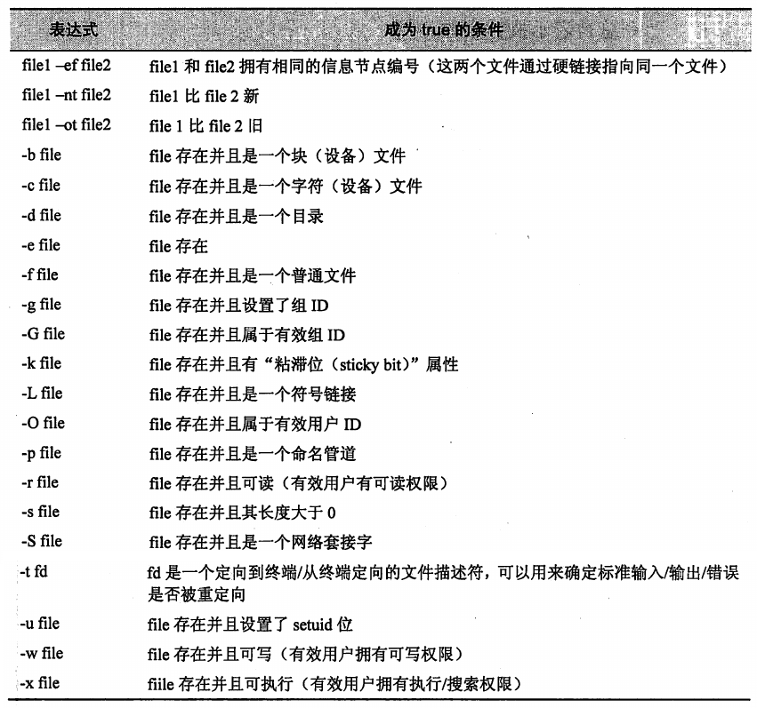
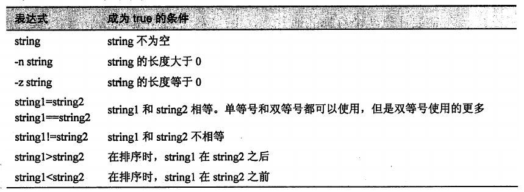
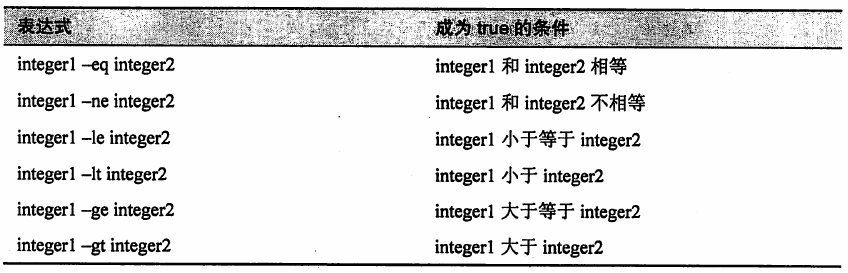
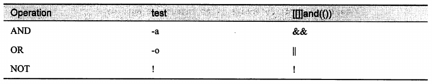
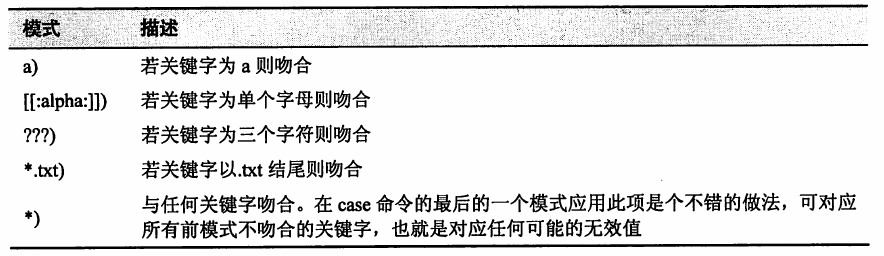

1. shell 脚本中的控制结构
1.1. if 分支语句
1.1.1. 使用 if
- 语法格式
if commands; then
commands
[elif commands; then
commands...]
[else
commands...]
fi
if 语句真正做的事情是评估命令的成功或失败，即命令的退出状态。
如果在 if 后面有一系列的命令(使用逗号分割), 那么则根据最后一个命令的执行结果进行评估。
示例
if true; then echo "It's true."; fi # It's true.
if false; then echo "It's true."; fi #
if false;true; then echo "It's true."; fi # It's true.
if true;false; then echo "It's true."; fi #
1.1.2. 使用 test 命令
经常和 if 一起使用的命令是 test。
test 命令会执行各种检查和比较。
test 命令有两种等价的形式
test expression[ expression ]# 更流行的形式
expression 是一个表达式, 其结果是 true 或 false。
- 当这个表达式为 true 时, test 命令返回一个零退出状态;
- 当表达式为 false 时, test 命令的退出状态为 1。
文件表达式用于评估文件的状态。

- 用引号把参数括起来可以确保操作符后面总是跟随着一个字符串, 即使字符串为空。
[ -e "$FILE" ]
- 字符串表达式用来测试字符串的各种状态。

- 在使用 test 命令时, ">" 和 "<" 运算符必须用引号括起来(或者使用反斜杠进行转义), 如果不这样做, 就会被 shell 解释为重定向操作符, 从而造成潜在的破坏性结果。
[ "$ANSWER" '<' "yes" ]
[ "$ANSWER" "<" "yes" ]
[ "$ANSWER" \< "yes" ]
- 整数表达式用于整数判断操作。

1.1.3. 更现代的 test 命令版本 -- [[]]
- 命令语法
# expression 是一个表达式, 其结果为 true 或 false。
[[ expression ]]
- [[]] 命令和 test 命令类似(支持所有的表达式), 不过它增加了一个很重要的新字符串表达式。
string =~ regex。如果 string 与扩展的正则表达式 regex 匹配, 则返回 true。
[[ "$INT" =~ -?[0-9]+ ]] # 用于测试 INT 变量中是否包含整数
- [[]] 增加的另一个特性是操作符 == 支持模式匹配, 就像路径名扩展那样。
[[ $FILE == foo.* ]]
由于 test 使用的所有表达式和操作符都被 shell 看做命令参数(不像 [[]] 以及 (())), 因此在 bash 中有特殊含义的字符, 如 "<"、">"、"("、")", 必须用引号括起来或者进行转义。
test和[[]]命令基本上完成相同的功能。- 相比之下，test 更为传统(而且也是 POSIX 的一部分), 而 [[]] 则是 bash 特定的。
- 由于 test 命令的使用更为广泛, 因此知道如何使用 test 更为重要。但是 [[]] 命令显然更有用, 而且更容易编码。
1.1.4. (()) -- 为整数设计
除了 [[]] 的复合命令之外, bash 同样提供了 (()) 复合命令, 它可用于操作整数。
(()) 命令支持一套完整的算术计算。
(()) 用于执行算术真值测试(arithmetic truth test)。当算术计算的结果是非零值时, 则算术真值测试为 true。
if ((1)); then echo "It is true."; fi # It is true.
if ((0)); then echo "It is true."; else echo "It is false."; fi # It is false.
- 由于 (()) 复合命令是 shell 语法的一部分, 而非普通的命令, 并且只能处理整数, 所以它能够通过名字来识别变量, 而不需要执行扩展操作。
if ((((INT % 2)) == 0)); then
echo "INT is even."
else
echo "INT is odd."
fi
1.1.5. 组合表达式
可以将表达式组合起来, 来创建更复杂的计算。
表达式是使用逻辑运算符组合起来的。
与 test 和 [[]] 命令配套的逻辑运算符有三个, 它们是
AND、OR和NOT。优先级：NOT > AND > OR
test和[[]]使用不同的操作符来表示这三种逻辑操作。

- 可以使用圆括号把表达式括起来，以进行分组。
1.1.6. 控制(短路)运算符
控制运算符是另一种方式的分支。
bash 还提供了两种可以执行分支的控制运算符。"&&"(AND) 和 "||"(OR) 运算符与 [[]] 复合命令中的逻辑运算符类似。
具体语法
command1 && command2 # 对于 "&&" 运算符来说, 先执行 command1, 只有在 command1 执行成功时, command2 才能够执行。
command1 || command2 # 对于 "||" 运算符来说, 先执行 command1, 只有在 command1 执行失败时, command2 才能够执行。
- 示例
mkdir temp && cd temp # 创建 temp 成功后，进入 temp
[ -d temp ] || mkdir temp # 如果 temp 目录不存在，就创建 temp
[ -d temp ] || exit 1 # 如果 temp 目录不存在，就退出脚本(退出状态为 1)
1.2. case 分支
bash 的多项选择复合命令被称为 case。
语法格式
case word in
[pattern [| pattern]...) commands ;;]...
esac
case 命令将关键字的值与特定的模式相比较, 若发现吻合的模式, 就执行与此模式相联系的命令。发现吻合的模式后, 将不再比对剩余的模式。
case 中的分支，不会贯穿。
1.2.1. 模式
case 使用以 ")" 字符结尾的模式。
范例

多个模式的组合
- 可以使用竖线(|)作为分隔符来组合多个模式, 模式之间是“或“的条件关系。
- 为了可读性，竖线的左右两边可以添加空格。
示例
q|Q)
a|A)
1.3. while 循环
- while 语法结构
# while 会判断一系列指令的退出状态。只要退出状态为 0, 它就执行循环内的命令。
while commands; do commands; done
- 示例
count=1
while [ $count -le 5 ]; do
echo $count
count=$((count + 1))
done
echo "Finished."
1.4. until 循环
while 命令退出状态不为 0 时终止循环, 而 until 命令则刚好相反。
除此之外, until 命令与 while 命令很相似。until 循环会在接收到为 0 的退出状态时终止。
语法结构
until commands; do commands; done
- 示例
count=1
until [ $count -gt 5 ]; do
echo $count
count=$((count + 1))
done
echo "Finished."
- 选择使用 while 还是 until, 通常取决于哪种循环能够允许程序员写出最明了的测试表达式。
1.4.1. 跳出循环
- bash 提供了两种可用于控制循环内部程序流的内建命令。
- break 命令立即终止循环, 程序从循环后的语句恢复执行。
- continue 命令则会导致程序跳过循环剩余的部分, 直接开始下一次循环迭代。
1.4.2. 应用：使用循环读取文件
- while 和 until 可处理标准输入, 这让使用 while 和 until 循环处理文件成为可能。
# abc.txt
# 1 2 3
# 2 2 3
# a b c
# b c e
while read a b c; do
printf "a: %s\tb: %s\tc: %s\n" \
$a \
$b \
$c
done < abc.txt
# 输出结果
# a: 1 b: 2 c: 3
# a: 2 b: 2 c: 3
# a: a b: b c: c
# a: b b: c c: e
程序逻辑
- 为将一份文件重定向到循环中, 可在 done 语句之后添加重定向操作符。
- 循环使用 read 命令读取重定向文件中的字段。
- 在到达文件末端之前, 退出状态为 0。
- 在读取过文件中的每一行之后, read 命令退出, 此时退出状态变为非 0, 循环终止。
将标准输入重定向到循环中也是可以做到的。
直接在终端输入
while read a b c; do
printf "a: %s\tb: %s\tc: %s\n" \
$a \
$b \
$c
done
- 通过管道符输入
cat | while read a b c; do
printf "a: %s\tb: %s\tc: %s\n" \
$a \
$b \
$c
done
- 因为管道是在子 shell 中进行循环操作。当循环终止时, 循环内部新建的变量或者是对变量的赋值效果都会丢失。
1.5. for 循环
因为 for 循环采用在循环期间进行序列处理的机制, 所以它不同于 while 循环和 until 循环。
for 循环在 bash 脚本编程中是一种十分流行的结构。
实现一个 for 循环应使用 for 命令。在新版 bash 语言中, for 命令存在两种形式。
1.5.1. for：传统 shell 形式
- 语法结构
for variable [in words]; do
commands
done
# variable 是一个在循环执行时会增值的变量名
# words 是一列将按顺序赋给变量 variable 的可选项
# commands 部分是每次循环时都会执行的命令。
- for 命令在命令行上也是很有用的。
for i in A B C D; do echo $i; done
- for 循环真正强大的功能在于创建字符列表的方式有多种。
# 使用花括号扩展
for i in {A..D}; do echo $i; done
# 使用路径名扩展
for i in distros*.txt; do echo $i; done
# 使用命令形式
for i in $(strings x.txt); do echo $i; done
- 如果 for 命令中字符部分的选项被忽略, for 循环默认依次处理位置参数。
#!/usr/bin/env bash
for i; do # 等价于 for i in "$@"; do
if [[ -r $i ]]; then
max_word=
max_len=0
for j in $(strings $i); do
len=$(echo $j | wc -c)
if (( len > max_len )); then
max_len=$len
max_word=$j
fi
done
echo "$i: '$max_word' ($max_len characters)"
fi
done
1.5.2. for：C 语言形式
- 语法结构
# expression1、expression2 和 expression3 为算术表达式
# commands 是每次循环都要执行的命令。
for (( expression1; expression2; expression3 )); do
commands
done
- 对等的 while 语句形式
# expression1 用来初始化循环条件
# expression2 用来决定循环何时结束
# expression3 在每次循环末尾执行
(( expression1 ))
while (( expression2 )); do
commands
(( expression3 ))
done
- 每当需要数值序列时, for 的 C 语言形式就能发挥作用。